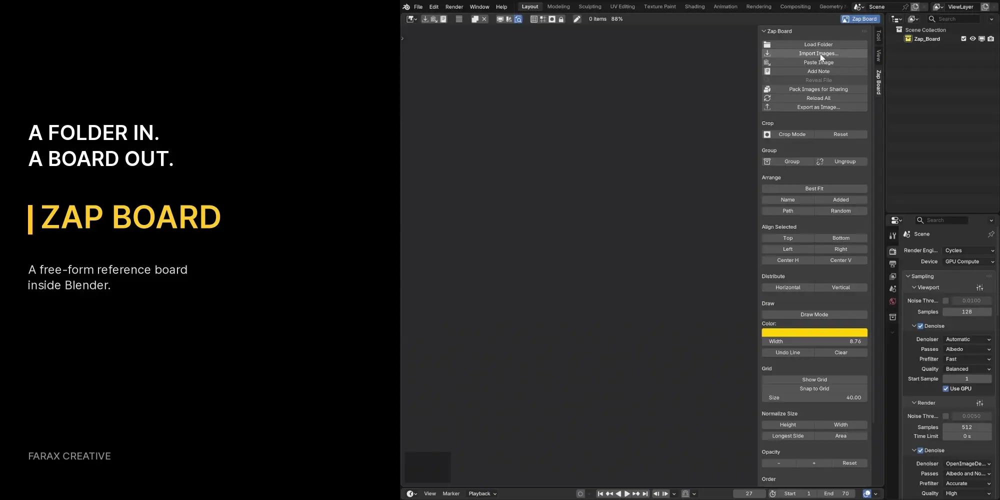
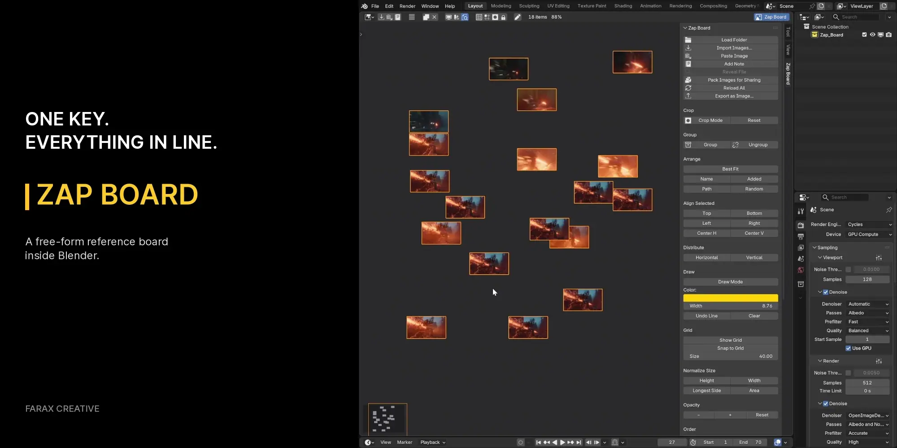
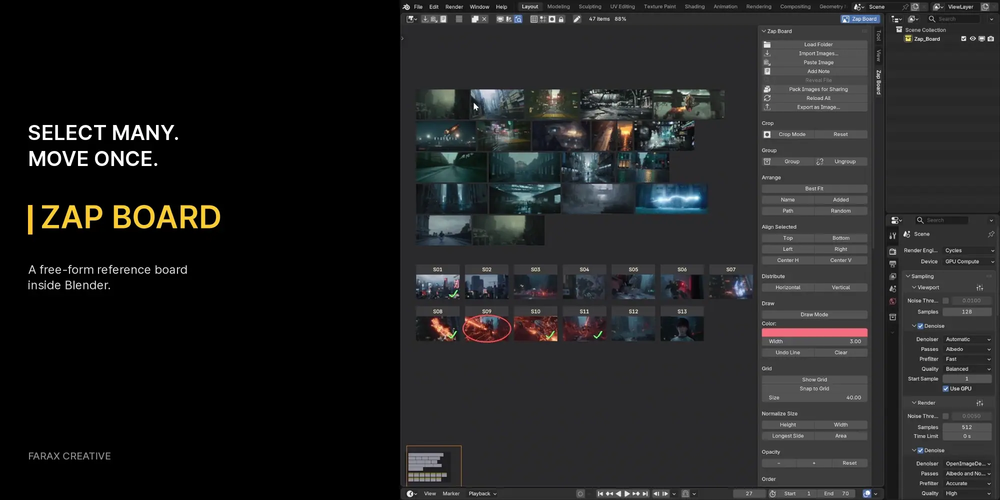
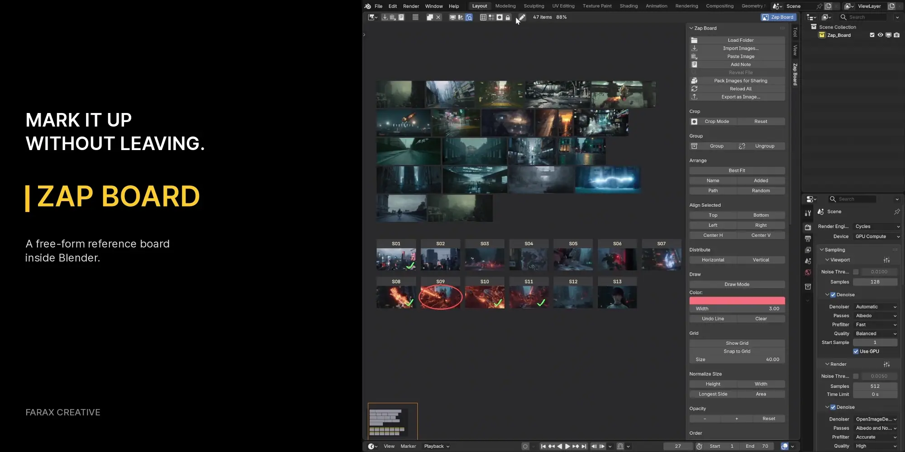
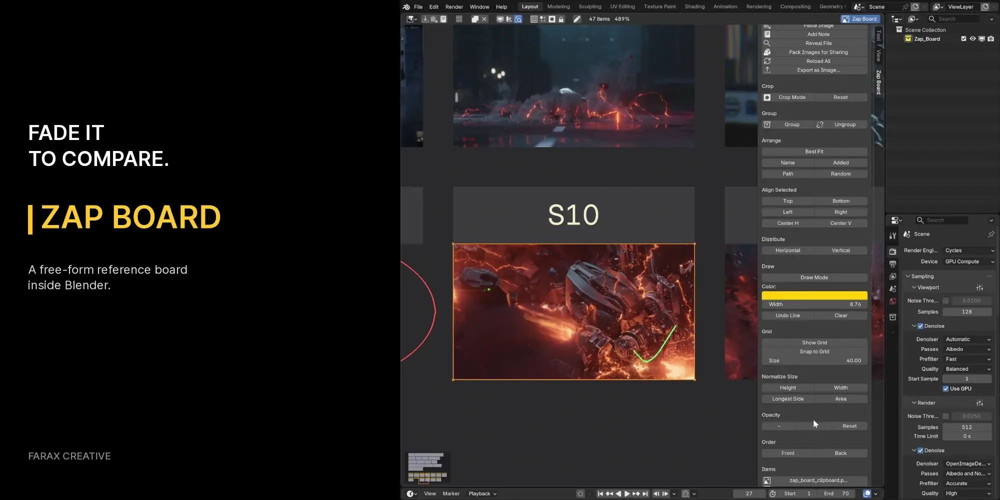
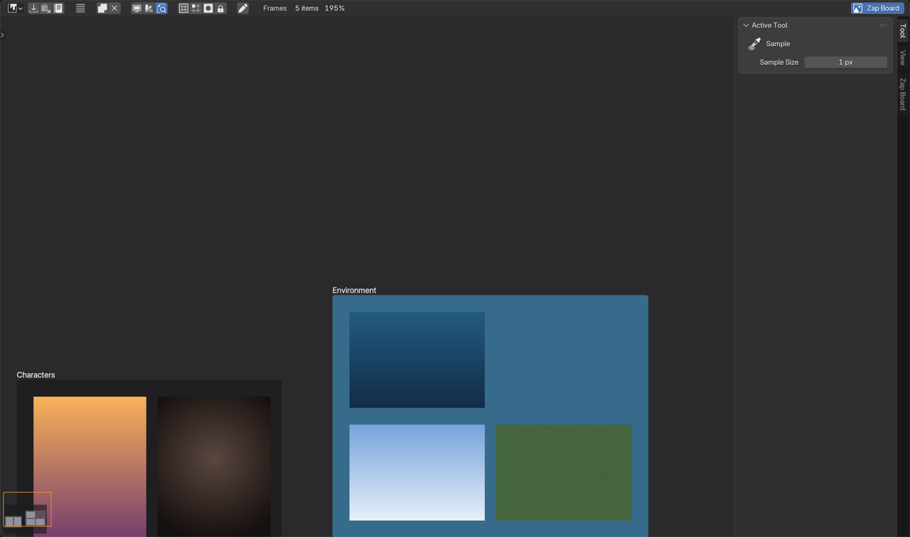
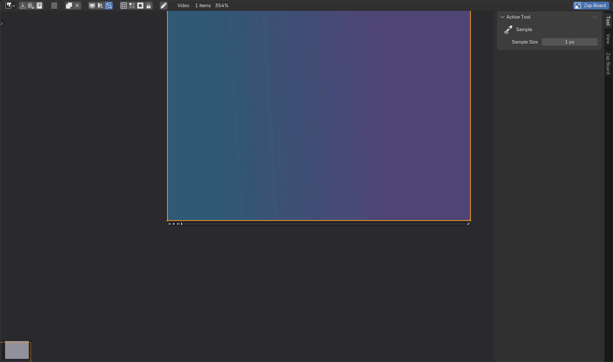

Drop images into any Image Editor, arrange and mark them up, and it saves with your file. No second app, nothing added to your 3D scene.

It sits in a browser tab or on a second monitor, so every glance is a context switch. And the file you ship has no memory that the reference was ever there.
Zap Board puts the board on the same canvas as the work and saves it inside the .blend, so it opens with the scene on any machine.
Drag images onto the board and move them like anything else on the canvas. It behaves like the editor you already know, not a modal dialog you have to fight.
Let a pile of images fall into a clean grid, or align and space them by hand. The layout stays yours to nudge.

Box-select a cluster and move, scale or align it as one, at the speed you expect from Blender.

Arrows, boxes and notes to call out exactly what matters, in the colours you pick, right where the reference is.

Lay a card over your render, drop its opacity, and check the match. The oldest trick in the book, without leaving Blender.

Named frames hold a cluster of cards and move as one, so a set of references stays a set.

Scrub a clip on the board and pull any frame out as a still to keep beside it.

A complete reference board. Drop images in, arrange and align, group frames, mark up, crop and grayscale, and keep as many boards as you like, all saved in your .blend.
Adds palette extraction and colour picking, image adjust, video and GIF cards, layout templates, send-to-3D and board export. No subscription, free updates.
Inside your .blend file, images, notes and frames together. Open it on another machine and the board is still there, and you can keep several boards in one file.
Free is a complete reference board. Pro adds the colour tools, image adjust, video and GIF, layout templates, send-to-3D and board export, a one-time $5 unlock in this same listing.
Yes, all three platforms. The only exception is Reveal File, which opens the folder on Windows only.
Install the add-on and build a board today. Pro is a one-time $5 unlock in this same listing. No subscription, free updates.
Free and $5 Pro